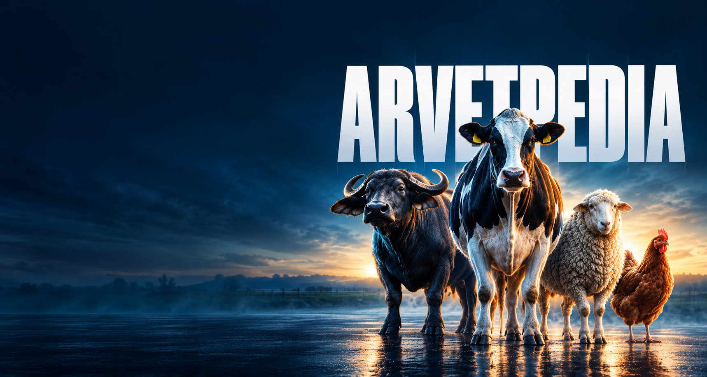

01
Structured Data
Direct pipeline from official EMA, FDA CVM, and SFDA veterinary summaries of product characteristics (SPCs).
TRUSTED DATA

Comprehensive database of veterinary drugs, diseases, active ingredients, and pharmaceutical companies — all in one place.
Engineered specifically for veterinarians, toxicologists, and pharmacologists — authoritative data and synchronized intelligence across four institutional pillars.
Direct pipeline from official EMA, FDA CVM, and SFDA veterinary summaries of product characteristics (SPCs).

Calibrated medical translation honoring standard Arabization conventions for pharmacology and pathology with complete RTL support.

Input field observations to rank probabilistic differentials and instantly compute validated active ingredient dosages and clearance timers.

Continuous active surveillance for adverse event notifications, label revisions, and dynamic withdrawal recalibration protocols.
From diagnostics to pharmacological guidance, we deliver structured, evidence-based data across species and clinical settings.
View all solutions↗Where clinical signs meet precise therapeutics. Comprehensive differential diagnosis tools for cattle and equine health.
EXPLORE CHAPTER→Certified product monographs and pharmacokinetics. Rigorous active ingredient data, withdrawal intervals, and interactions.
EXPLORE CHAPTER→Biosecurity and commercial flock integrity. Deep pathological guidance for high-density broiler and layer operations.
EXPLORE CHAPTER→Most veterinary databases show 20 metrics that don't drive clinical outcomes. These 5 do — build your diagnostic and prescribing workflows around them.
→ PRIMARY BENCHMARK
% of active monographs cross-referenced with EMA, SFDA, and FDA CVM. The one number that ties VetPedia to clinical dosing confidence.
DISEASES CATALOGUED
Bovine, equine, and avian pathological entities with differential diagnosis.
PEER-REVIEW SCORE
Avg. clinical peer-reviewer rating per monograph query.
ACTIVE INGREDIENTS INDEXED
Complete withdrawal periods and pharmacological cross-interaction matrix.
FORMULARY VOLUME
Approved brand veterinary products across 160+ pharmaceutical manufacturers.

Have inquiries about monograph validation, institutional access, or formulary partnerships? Reach out to our veterinary pharmacologists and medical editors.
Monograph queries, drug interaction verification & SPC disputes.
clinical@vetpedia.orgHospital networks, veterinary academic faculties, and API licensing.
partners@vetpedia.orgMonograph errata requests undergo immediate escalation to board-certified veterinary pharmacologists.
Please specify your clinical credentials for accelerated verification.
Logistics
Chris
May 12, 2025

Access the full database of veterinary drugs, active ingredients, and clinical guides today.